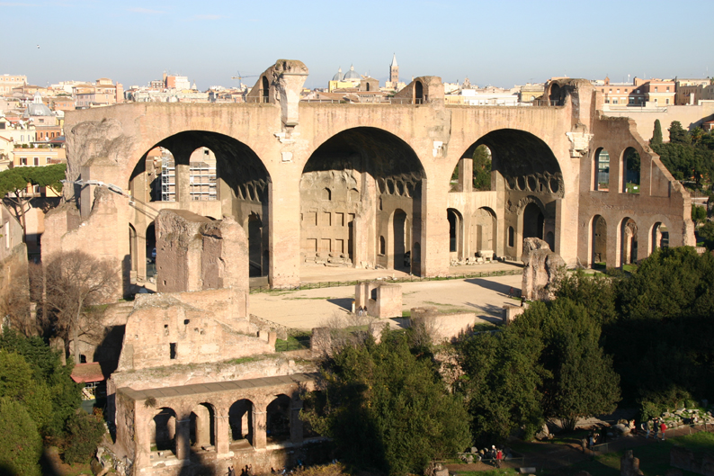
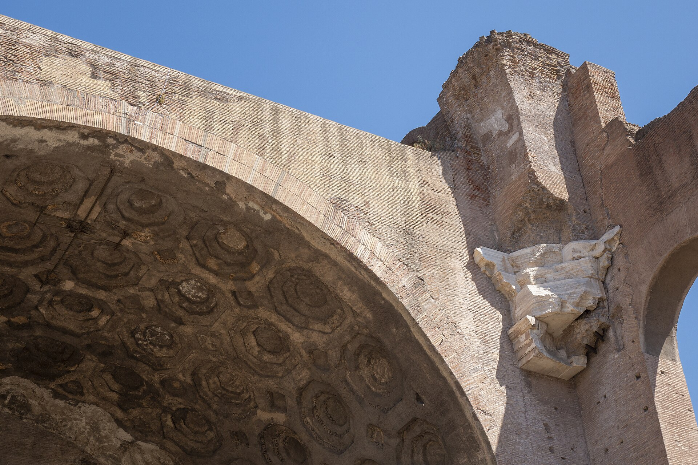

Basilica (buh-SIL-ih-kuh)
A Roman public hall used for business, meetings, and law courts. Christians later adapted this building type for churches.
Basilica of Maxentius and Constantine · Rome, 308–312 C.E. · Roman Forum


The underside of the vault is patterned with octagonal coffers. Even in ruins, the brick-faced concrete arch and giant wall support make the building’s engineering easy to see.
In ancient Rome, a basilica was not a church. It was a large public building used for law courts, business, and public meetings. This one was begun by the emperor Maxentius around 308 C.E. After Constantine defeated him in 312, Constantine completed the building and connected it to his own rule.
Its size was meant to impress. Instead of a light wooden roof, the main hall was covered by massive concrete groin vaults. Lower side spaces had barrel vaults. Thick brick-faced concrete walls carried the weight, creating a building that felt more like Rome’s huge bath halls than a simple meeting room.
The basilica was a useful idea because it could hold a crowd and guide people toward one end of a long interior. Soon after Christianity became legal in 313 C.E., Christian builders adapted the basilica form for churches. The new churches changed the building’s purpose, but kept its ability to gather people in one large shared space.
A Roman public hall used for business, meetings, and law courts. Christians later adapted this building type for churches.
A long, curved ceiling shaped like a half-cylinder. It looks like a tunnel cut in half lengthwise.
A vault made where two barrel vaults cross at right angles. The crossing creates curved ridges called groins.
This civic building becomes an important bridge to Early Christian architecture. In the Early Medieval deck, you will meet Old St. Peter’s, where Christians use the basilica plan to gather worshippers and lead them toward the altar. You will also meet Santa Sabina, with the same long central space, side aisles, and focus at one end—but with a lighter wooden roof and rows of columns. The building type stays familiar while its purpose changes from civic life to Christian worship.